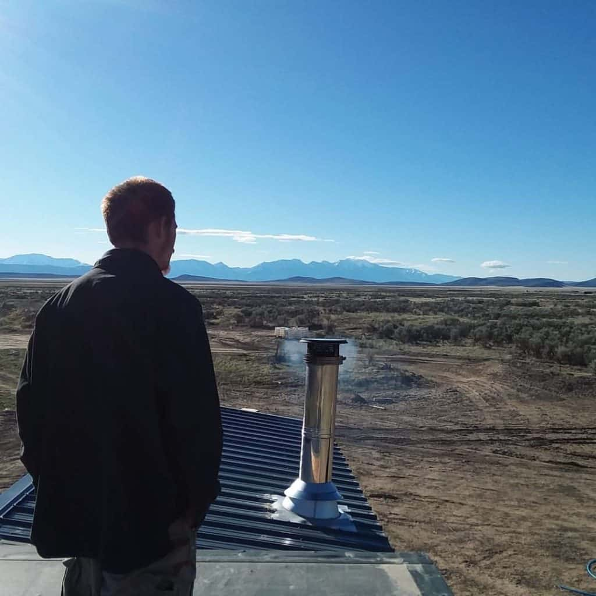

August 19, 2019

This article has been reviewed in accordance with our editorial policy.
Many people have asked me where we actually live in our tiny house or about having a living room. So I wanted to give everyone more information about how you can set up your living space as a room or other livable options.
So, do tiny houses have living rooms? Many tiny houses do have living rooms but not all of them. There are plenty of ways you can create living space in your house. Your living room can share space with your kitchen or bedroom.
My husband has helped build hundreds of tiny houses and there are a variety of different living room ideas they have. Many have been quite creative and some I don't think would be usable. But where you decide to live in your house is up to you, here is some advice to get you started.
Many people do not understand living in a tiny house because they don't understand where you "live". There are many different ways to answer this. In a tiny house you have more space in that small of an area because you have less "stuff".
My husband and I have been living tiny for several years now. We went from 448 (including lofts) square feet to 280 to 112! We have always felt like we have had plenty of space to live, and we have five dogs!
Many tiny houses have a living room. Our first house we built had an 8' x 9' living room with a couch and a TV. There are lots of different ways to include a living room in your tiny house. Some people have them as a separate room, or a loft, or under the loft.
You can also combine your living room into another room. You can have a seating area across from your kitchen or somewhere else in your house. Many people tie a living room into their kitchen or bedroom area.
Our first house had a full living room, which we used mostly to watch TV and chat. Our second house then only had a seating area by the kitchen, we seldom used this, only when we had company or when we were just waiting for the other person.
Finally, our current build does not have a living room and I have not missed it at all. We have a fold up table with seats, where we can work on things or just hang out. And if we are not sitting there we just sit in our bed.
Granted, we have no children and we do not have guests over a lot. Otherwise we would have stuck with the first house we built. But there is so much more to living than what's contained in your living room.
For the most part living rooms are used for watching TV or accommodating guests. I always urge people to really analyse their life and see how they spend their time. What do you actually do in your living room?
Before we went tiny, we used our living room a lot. But what did we actually do in it? Mostly just sat and talked or watched TV. We now watch a lot less TV! We had a TV in our first two houses but we slowly started using it less and less, so in our current house we don't have one.
We typically use our phones or laptop to watch any shows. We do this in our sitting area, kitchen, or bedroom. We don't need a whole room for that. Actually we have found that we can do everything we used to do in our living room in other parts of our house.
One of the bigger concerns people have is how to have guests over in a tiny house. Our first house had a living room and we did have people over. We always had space to have people in our house.
We have never really been the type to host parties or have a lot of people over, and I assume that most people who want to live in a tiny house would be the same way. We still have company and it has never been a burden.
If you know you are the type to have a lot of people over then you should designate a living room area in your home. If you almost never have people over, I think you will find that you will not miss your living room.
Having a few people over is easy without an official living room. You can use your sitting area or sit around your table. Another option we use a lot is having a great outside area for get-togethers.
We usually have a fire pit and outside chairs. Whenever people come over they prefer to sit outside anyway. One of the best parts about going tiny is being able to be so close to the outdoors.
One of the appeals to tiny houses is that there is more living and less house. We spend a lot more time outside now. We have a small house, so why not go outside? Especially on beautiful days or clear nights.

Being more connected to the outside is a major benefit of living tiny. We often sit outside and talk and let our dogs play. We are very busy people, I am going to school full-time to get my Ph.D., working for my school, and we are building a business.
We rarely spend a lot of time at home. When I am home, most of the time I am cooking, sleeping, or getting ready for my day. Obviously, this does not use much space. But when we have time, we are exploring, dreaming, or just relaxing. All of this can be done outside.
Another potential concern is having space to have events or holidays in your tiny house. But again, if you prioritize a living room you will have that space. We have had a few holidays in a tiny house now.
The point of going tiny is so you can focus on what you love and eliminate the waste. If holidays are important to you then you will save some space or storage for what you enjoy. I have had a small Christmas tree that I have carried around with me for years now.
If having people around for holidays is important to you and you do not feel like you have the space in your house, there are always other options. You can rent a room or space at event centers or travel over to other people's houses.
Do tiny houses have bathrooms? Almost all tiny houses have bathrooms. The typical bathroom size is 8' x 5', which is a standard guest bathroom or a master bathroom in a small house.
Can a tiny house have a basement? Most tiny houses do not have basements, but you can add one if it is on a foundation. This would count as living space though, so the house would still need to be under 500 square feet to be a tiny house.